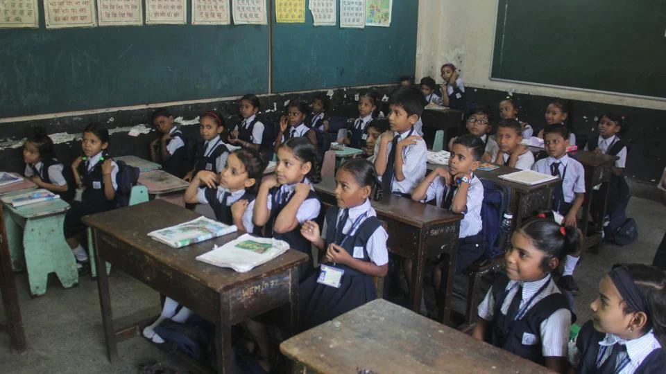
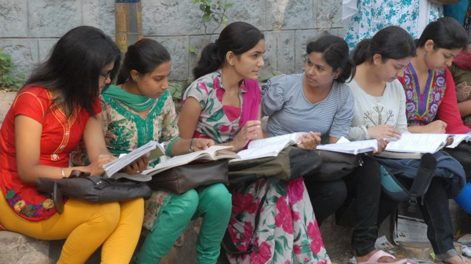
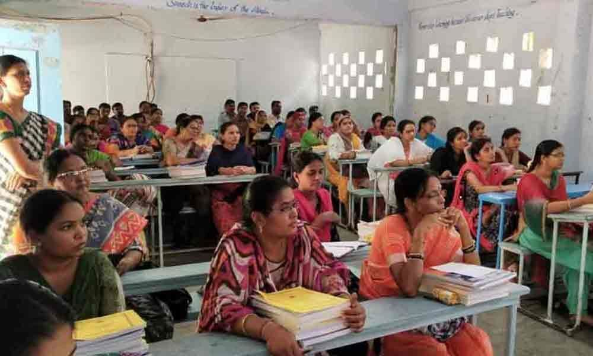
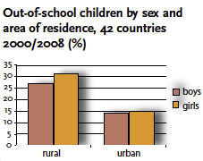

INTRODUCTION TO EDUCATION FOR WOMEN:

Education is most important for empowering women in the present society. It is not only develop the personality of an individual but also plays an
important role in economic, social and cultural development. The UNESCO is an organisation which gives efforts to raise the women in education regardless of age,
gender, race or any other differences in social and economical status. Nowadays, the importance of women's education is growing day by day but in some countries like
developing countries still their is a challenge for their education. Because literacy rate of women compared to men is less by the recent census reports. In india,
now their is stability in providing basic education for both men and women at some extent.

In india, still there is a concern about the education of women as like as men. The reason behind this is the society not allows women to study as like
as men and they thinks women's role is to take care of the house and family. The Government of india decided to provide education to all women for some extent but
it is not properly implemented because still the mindset of some people is not in a way to provide education for women. Some people doesn't provide education to their
female childrens. Because they think women are only for giving birth to new one's and take care of their families. Now the mindset of people changes somewhat to
provide education to their female children's.
IMPORTANCE OF WOMEN'S EDUCATION:

A well-educated woman provides the skills, knowledge, and self-assurance necessary to be a better mom, worker, and citizen. A well-educated woman will
also be more productive and well-paid at work. To begin with, education is a fundamental right for everyone, and when we say everyone, we must remember that women
should be included in this group. We cannot have such a big number of illiterate women in our society; it would be a great loss to us.
- Increases literacy rate.
- Equality in society.
- Poverty reduction.
- Eliminate human trafficking.
the above mention things will happen when the eduaction is possible for all the girls. Women’s empowerment begins with education, which helps them to
adapt to difficulties, face their traditional roles, and alter their lives. As a result, we must not overlook the value of education in terms of women’s empowerment.
In light of recent advancements in women’s education, India is seen as the world’s emerging superpower.
COMPARISON OF EDUCATION IN BOTH RURAL AND URBAN AREAS:
The urban female literacy rate is 64 percent and rural women literacy rate is half of it, i.e., 31 percent. As with India as a whole, many states have
large rural-urban differences in female literacy. In six of the 24 states, 25 percent or less of the women in rural areas are literate. In Rajasthan, less than 12
percent of rural women are literate. This low level of literacy not only has a negative impact on women’s lives but also on their families’ and country’s economic
development.

HELPING ORGANISATIONS FOR WOMEN EDUCATION:
- Educate Girls
- Malala Fund
- Camfed
- She's the First
- Global Fund for Women
Above organisations are helping the girls in terms of their development in society both mentally economically by providing education.
CONCLUSION:
Women education is very important for the development of a country. It is necessary to provide girls and women with proper resources so that they can
get educated. Girls and women have the potential to contribute to the economic development of their countries. They can also play an important role in the development
of their families. Therefore, it is necessary to pay more attention to women education.